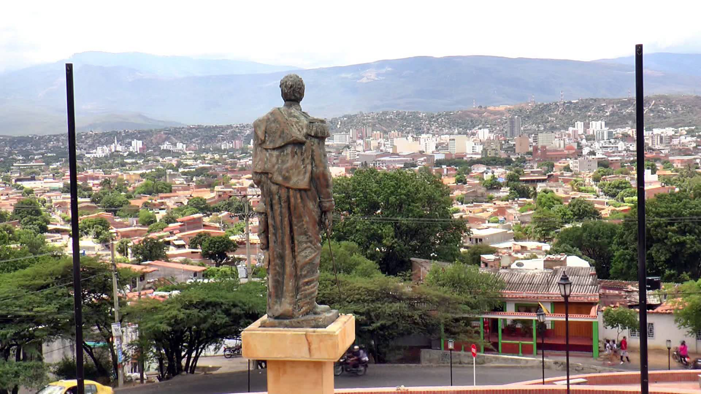

Cúcuta, oficialment San José de Cúcuta, és un municipi colombià, capital del departament de Nord de Santander. Es troba situat al nord-est del país, a la Vall homònim, sobre la Serralada Oriental dels Andes, i enfront de la frontera amb Veneçuela. Cúcuta compta amb una població aproximada de 650 mil habitants, té una longitud de 10 km de nord a sud i 11 d’orient a occident, i està constituïda per 10 comunas. És l’epicentre polític, econòmic, administratiu, industrial, cultural i turístic del departament.
Com a capital del departament, alberga els òrgans governamentals de l’ordre departamental com la Governació de Nord de Santander i l’Assemblea de Nord de Santander. El municipi és capçalera del Districte Judicial de Cúcuta, per la qual cosa és seu del Tribunal Superior de Cúcuta, el Tribunal Administratiu de Nord de Santander, el Consell Superior de la Judicatura Seccional Nord de Santander i la Fiscalia General Seccional Nord de Santander.
